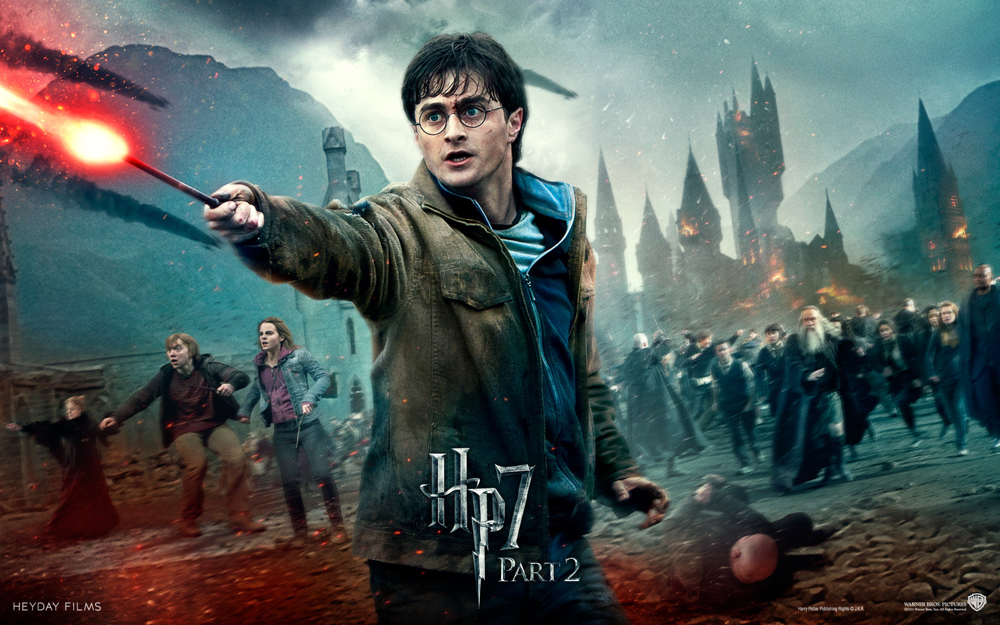
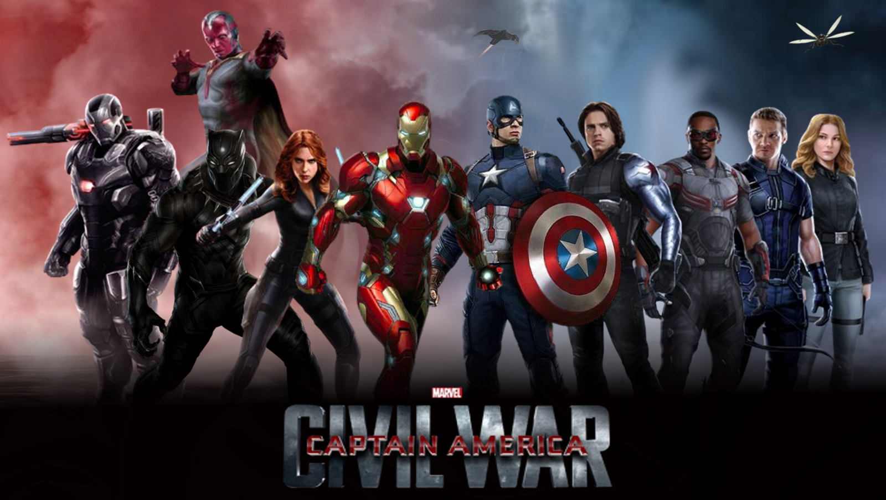
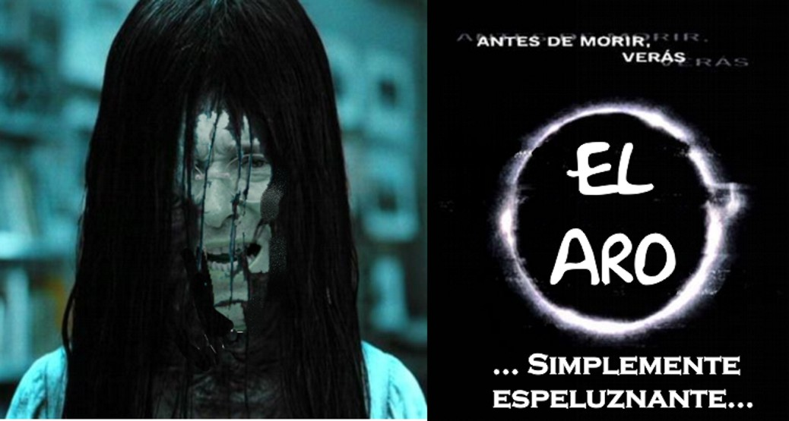
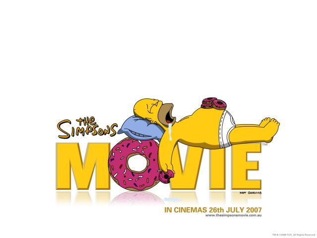

-

Harry Potter
Harry Potter es una serie de novelas fantásticas escrita por la autora británica J. K. Rowling, considerada una de las sagas más importantes de la historia. Realmente la más leída según el Libro de los récords Guiness. Wikipedia
-

Avengers
es una película estadounidense de superhéroes de 2012 escrita y dirigida por Joss Whedon. Fue producida por Marvel Studios y distribuida por Walt Disney Pictures, y basada en el cómic homónimo de Marvel Comics. Es parte del Universo cinematográfico de Marvel
-

Civil War
Esta pelicula es la Tercera entrega de la saga Capitán América. Luego de otro incidente internacional involucre a Los Vengadores, causando varios daños colaterales, aumentan las presiones políticas para instaurar un sistema que exija más responsabilidades y que determine cuándo deben contratar los servicios del grupo de superhéroes.
-

El aro
Se trata de un remake de la película de terror japonesa de 1998, Ringu, que a su vez se basó en la novela Ringu de Kōji Suzuki (que también ayudó a coescribir las dos versiones de la película), y se centra en una cinta de video maldita misteriosa que contiene una serie aparentemente aleatoria de inquietantes imágenes.
-

Los Simpson
es una película animada basada en la exitosa serie de televisión animada Los Simpson.
{kind=link}
{kind=link}
{kind=link}
{kind=link}